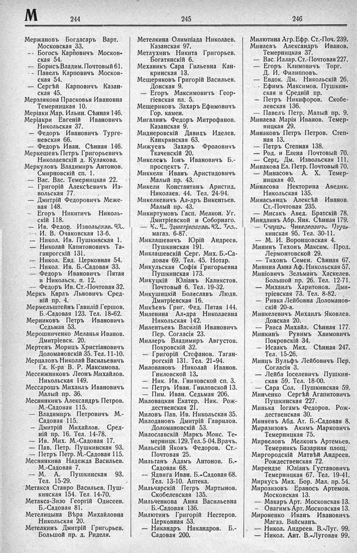

Лист источника 432
Скан

Распознанный текст
М 244
Мержановъ Богдасаръ Варт.
Московская 33.
-- Богосъ Карповичъ Москов-
ская 54.
-- Борисъ Владим. Почтовый 61.
-- Павелъ Карповичъ Москов-
ская 54.
-- Сергѣй Карповичъ Казан-
ская 45.
Мерзлякова Прасковья Ивановна
Темерницкая 10.
Меріаки Мар. Ильин. Сѣнная 146.
Меріакри Евгеній Ивановичъ
Никольская 37.
-- Федоръ Ивановичъ Турге-
невская 66.
-- Федоръ Иван. Сѣнная 146.
Меркешевъ Петръ Григорьевичъ
Николаевскій д. Кулакова.
Меркуловъ Владимиръ Антонов.
Смирновскій сп. 1.
-- Вас. Вас. Темерницкая 22.
-- Григорій Алексѣевичъ Из-
вольская 77.
-- Дмитрій Федоровичъ Меже-
вая 148.
-- Егоръ Никитичъ Николь-
скій 118.
-- Ив. Федор. Извольская 93.
-- И. В. Очаковская 13-б.
-- Никол. Ив. Пушкинская 1.
-- Николай Капитоновичъ Та-
ганрогскій 131.
-- Никол. Евд. Церковная 54.
-- Никол. Ив. Б.-Садовая 33.
-- Федоръ Ивановичъ Пятая
и Никольск. п. 12.
-- Федоръ Ив. Ст.-Почтовая 32.
Меркъ Карлъ Львовичъ Сред-
ній пр. 4.
Мермельштейнъ Гавилій Гершов.
Б.-Садовая 123. Тел. 18-62.
Мерниковъ Петръ Ивановичъ
Седьмая 53.
Мерошниченко Меланья Иванов.
Дмитріевск. 20.
Мертенъ Морицъ Христіановичъ
Доломановскій 35. Тел. 11-10.
Мерцаловъ Николай Васильевичъ
Гл. К-ра В. Р. Максимова.
Месенжниковъ Леонъ Михайлов.
Никольская 149.
Мессарошъ Михаилъ Ивановичъ
Малый пр. 36.
Меснянкинъ Александръ Петров.
М.-Садовая 115.
-- Владимиръ Петровичъ М.-
Садовая 115.
-- Дмитрій Михайлов. Сред-
ній пр. 16. Тел. 14-78.
-- Ив. Мих. М.-Садовая 17.
-- Пав. Петр. Пушкинская 93.
-- Петръ Петр. М.-Садовая 115.
Меснянкина Надежда Васильев.
М.-Садовая 7.
-- М. А. Пушкинская 93.
Тел. 15-29.
Метакса Ставро Васильев. Пуш-
кинская 154. Тел. 14-70.
Метакса-Зизо Георгій Одисеев.
Б.-Садовая 81.
Метелицына Вѣра Михайловна
Никольская 20.
Метелкинъ Дмитрій Григорьев.
Большой пр. д. Риделя.
245
Метелкина Олимпіада Николаев.
Казанская 97.
Метлухинъ Никита Григорьев.
Богатянскій 6.
Механикъ Сара Гильевна Кан-
кринская 13.
Мещеряковъ Григорій Васильев.
Донская 9.
-- Егоръ Максимовичъ Геор-
гіевская пл. 5.
Мещериковъ Захаръ Ефимовичъ
Гор. камен.
Мигалинъ Федоръ Митрофанов.
Казанская 9.
Миднеровскій Давидъ Иделев.
Канкринская 63.
Мижуевъ Захаръ Фроловичъ
Ткачевскій 20.
Микелевъ Іонъ Ивановичъ Б.-
проспектъ 7.
Миккели Иванъ Аристидовичъ
Малый пр. 43.
Микели Константинъ Аристид.
Николаев. 44. Тел. 24-94.
Микелкевичъ Ал-дръ Викентьев.
Малый пр. 43.
Микиртумовъ Гасп. Мелкон. Уг.
Дмитріевской и Соборнаго.
-- К. Е. Дмитріевская 82. Тел.
магаз. 6-87.
Миклашевичъ Юрій Андреев.
Пушкинская 191.
Миклашевскій Серг. Мих. Б.-Са-
довая 69. Тел. 45. Нотар.
Микульская Софія Григорьевна
Пушкинская 173.
Микуцкій Юліанъ Каликстов.
Почтовый 6. Тел. 19-32.
Микушицкій Болеславъ Людв.
Дмитріевская 16.
Микѣевъ Григ. Фед. Пятая 144.
Миленина Ал-дра Николаевна
Никольская 142.
Милентьевъ Василій Ивановичъ
Пер. Согласія 23.
Миллеръ Владимиръ Августов.
Покровскій 32.
-- Григорій Стефанов. Таган-
рогскій 131. Тел. 21-94.
Миловановъ Николай Иванов.
Гниловской 13.
-- Ник. Ив. Гниловской сп. 3.
-- Петръ Иван. Гниловской 13.
-- Пим. Иван. Седьмая 206.
Миловацкая Екатер. Ник. Рож-
дественская 21.
Миловъ Пав. Ив. Никольская 35.
Милодановъ Дмитрій Гаврилов.
Доломановскій 53.
Милославскій Маркъ Моис. Те-
мерницк. 129. Тел. 5-04. Врачъ.
Мильскій Яковъ Федоров. Ст.-
Почтовая 25.
Мильтанъ Адамъ Антонов. Б.-
Садовая 68.
-- Ядвига Иван. Б.-Садовая 68.
Тел. 13-10. Аптека.
Мильчарскій Петръ Мартынов.
Скобелевская 135.
Мильченкова Анна Васильевна
Б.-Садовая 136.
Милютинъ Григорій Нестеров.
Церковная 53.
-- Никандръ Никандров. Б.-
Садовая 200.
246
Милютина Агр. Ефр. Ст.-Поч. 239.
Минаевъ Александръ Иванов.
Темерницкая 37.
-- Вас. Иллар. Ст.-Почтовая 227.
-- Егоръ Климовичъ Торг.
Д. И. Филипповъ.
-- Евдок. Дм. Никольскій 26.
-- Ефимъ Максимов. Пушкин-
ская и Средній пр.
-- Петръ Никифоров. Скобе-
левская 136.
-- Павелъ Петр. Малый пр. 9.
Минаева Марія Иванов. Темер-
ницкая 29.
Минаковъ Петръ Петров. Степ-
ная 13.
-- Петръ Степная 138.
-- Род. и Елена Почтовый 70.
-- Серг. Дм. Извольская 111.
Минакова Ел. Петр. Почтовый 70.
-- Минасовъ А. Х. Темер-
ницкая 40.
Минасова Некторина Аведик.
Никольская 135.
Минасьянцъ Алексѣй Иванов.
Ст.-Почтовая 235.
-- Мисакъ Авед. Братскій 78.
Миндлинъ Абр. Янк. Сѣнная 179.
-- Гиршъ Янкелевичъ Пуш-
кинская 95. Тел. 30-11.
-- М. И. Воронцовская 4.
Мининъ Тихонъ Максим. Прод.
Лермонтовской 29.
-- Тихонъ Семен. Сѣнная 67.
Минина Анна Аф. Никольская 57.
Миніовичъ Зельманъ Хаскелев.
Большой пр. 26. Тел. 12-71.
-- Михаилъ Харитонов. Дми-
тріевская 73. Тел. 8-82.
-- Ривка Лейбовна Доломанов-
скій 20-а.
Минкелевичъ Михаилъ Яковлев.
Донская 20.
-- Раиса Михайл. Сѣнная 177.
Минкинъ Рувимъ Хаимовичъ
Покровскій 34.
-- Исаакъ Мих. Сѣнная 247.
Тел. 15-26.
Минцъ Вульфъ Лейбовичъ Пер.
Согласія 3.
-- Лейба Іоселевичъ Пушкин-
ская 59. Тел. 18-00.
-- Сара Сол. Пушкинская 59.
Минченко Сергѣй Агапитовичъ
Пушкинская 227.
Минька Іогамъ Федоров. Рож-
дественская 30.
Миняевъ Абд. Ат. Б.-Садовая 8.
Миразизовъ Акимъ Марковичъ
Темерницкая 75.
Мирвеловъ Мелконъ Артемьев.
Темерникъ Базарная площ.
Миргородскій Матвѣй Андреев.
Рождественская 72.
Мирендзе Юліанъ Густавовичъ
Темерницкая 67. Тел. 19-41.
Миркусъ Мих. Бор. Мал. пр. 54.
Мирозизовъ Ераносъ Артемов.
Московская 13.
-- Макаръ Арт. Московская 13.
-- Овагимъ Арт. Московская 13.
Мироненко Иванъ Ивановичъ
Магаз. Вайсмань.
-- Никол. Андреев. В.-Луг. 99.
-- Никол. Ант. В.-Луговая 99.